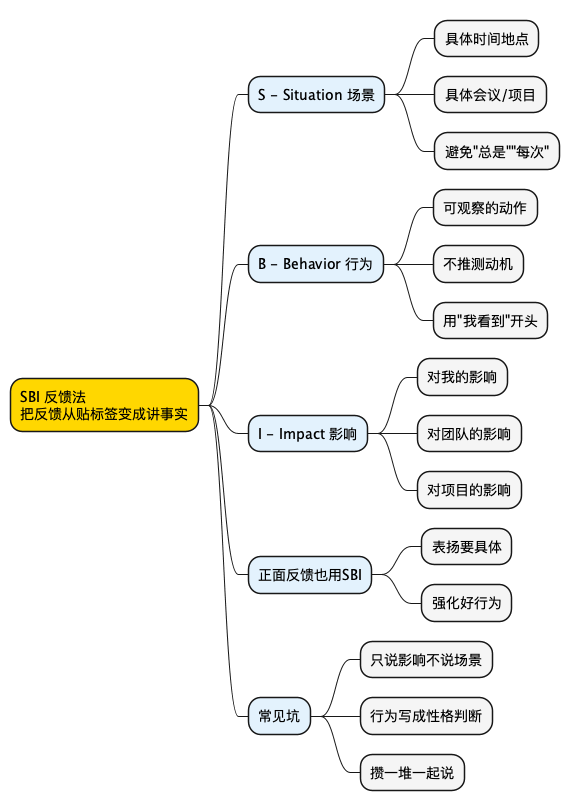

职场工具箱之 SBI 反馈法：为什么你说"你态度有问题"对方只会更防御？
Posted on 五 13 3月 2026 in Method
| Abstract | 职场工具箱之 SBI 反馈法：为什么你说"你态度有问题"对方只会更防御？ |
|---|---|
| Authors | Walter Fan |
| Category | Method |
| Version | v1.0 |
| Updated | 2026-03-13 |
| License | CC-BY-NC-ND 4.0 |
大纲
1. 扎心场景：你给同事反馈"态度有问题"，对方当场翻脸或冷战 2. What：SBI 是什么——Situation、Behavior、Impact 三要素拆解 3. Why：为什么"贴标签式反馈"无效——归因错误、防御机制、模糊指令 4. How：怎么用 SBI——公式模板、三个实战场景改写、对比表、正面反馈、常见坑 5. 总结 + 行动清单 6. 思维导图 7. 系列回顾 8. 扩展阅读一、扎心场景：你好心给反馈，对方当场翻脸
你有没有经历过这种场面？
周五下午，你终于鼓起勇气，把小张拉到会议室。你酝酿了一周的话，终于说出口：
"小张，我觉得你最近态度有点问题。"
小张的表情，肉眼可见地从"？"变成了"？？？"，然后变成了"你在说什么？"。
"我态度怎么了？"
"就是……不够积极，不够主动。"
"我哪里不积极了？我每天加班到九点！"
"我不是说加班的事，我是说……你要多想想。"
"想什么？你倒是说清楚啊！"
然后你们就陷入了一场毫无意义的拉锯战。你觉得自己明明是好心提醒，对方却像被踩了尾巴一样跳起来。小张觉得你在无端指责，心里暗暗给你贴了个标签："这人就是针对我。"
从此以后，你们之间多了一层看不见的冰墙。
开会不说话了。消息回得慢了。眼神都不对了。
你复盘了一下，觉得自己说的也没错啊——他确实态度有问题啊。但为什么效果这么差？
因为你说的不是反馈，是审判。
"态度有问题"这五个字，听起来像什么？像法官宣判。你没有给出任何证据，没有描述任何具体事实，直接下了结论。
换位想一下：如果你的老板把你叫到办公室，说"我觉得你态度有问题"，你的第一反应是什么？
是"谢谢老板指出我的不足，我一定改正"吗？
不，你的第一反应是："我做错什么了？你倒是说清楚啊！"
然后第二反应是："你凭什么这么说我？"
这就是贴标签式反馈的致命问题——它触发的不是反思，是防御。
那怎么办？
答案是三个字母：SBI。
二、What：SBI 到底是什么？
SBI 是 Center for Creative Leadership（CCL，创意领导力中心）开发的一个反馈框架。它把一次反馈拆成三个部分：
- S = Situation（场景）：什么时间、什么地点、什么会议、什么项目——具体到对方能回忆起来的那个瞬间。
- B = Behavior（行为）：对方做了什么——是你亲眼看到、亲耳听到的可观察行为，不是你脑补的动机。
- I = Impact（影响）：这个行为对你、对团队、对项目产生了什么具体影响。
就这么简单。三句话。
举个例子：
"上周三的需求评审会上（S），你在产品经理讲需求的时候一直在看手机（B），产品经理后来跟我说她觉得自己的方案不被重视，下次不太想来我们组评审了（I）。"
对比一下原来的版本：
"你态度有问题。"
感受到区别了吗？
新的版本，对方知道你在说哪件事、他做了什么、造成了什么后果。他可能会说"啊那天我在处理一个线上紧急 bug"，然后你们可以讨论"下次遇到这种情况怎么处理"。
旧的版本，对方只知道你在攻击他这个人。他唯一能做的就是防御。
S = Situation：把"总是"换成"那一次"
场景要具体。具体到什么程度？具体到对方能在脑子里"回放"那个画面。
❌ "你总是迟到。"
✅ "上周二早上的站会，9:15 开始的那次。"
❌ "你每次开会都不说话。"
✅ "昨天下午的技术方案评审会上。"
为什么要这么具体？因为"总是""每次""一直"这些词，是反馈的毒药。
你说"你总是迟到"，对方脑子里立刻开始搜索反例："上周四我就没迟到！上上周我还提前到了！"然后他的注意力就从"我确实迟到了"变成了"你说的不对"。
一个具体的场景，对方没法反驳。他只能面对那个事实。
小白提示：场景描述不需要精确到秒，但要精确到对方能想起来"哦你说的是那次"。时间 + 地点 + 事件，三选二就够了。比如"上周三的站会"或者"周五下午你在工位上的时候"。
B = Behavior：说你"看到"的，不是你"觉得"的
这是 SBI 里最容易踩坑的一步。
行为必须是可观察的——就是说，如果现场有一台摄像机，摄像机能拍到的东西。
❌ "你不尊重产品经理。"（这是你的判断，摄像机拍不到"不尊重"）
✅ "你在产品经理讲需求的时候一直在看手机。"（摄像机拍得到）
❌ "你不上心。"（摄像机拍不到"不上心"）
✅ "你提交的测试报告里有三处数据和实际结果不一致。"（摄像机拍得到）
❌ "你故意找茬。"（你怎么知道人家是故意的？你是读心术大师吗？）
✅ "你在评审会上连续提了五个问题，每个问题都是在质疑方案的可行性。"（这是事实描述）
看出规律了吗？
可观察行为 = 动词 + 具体内容。
"看手机""提交报告""提了五个问题"——这些都是动作，是事实。
"不尊重""不上心""故意找茬"——这些都是你的解读，是推测。
用程序员的话说：可观察行为是 console.log() 打出来的日志，主观判断是你看着日志脑补的 root cause。日志是事实，root cause 可能是错的。
小白提示：一个简单的检验方法——把你要说的话前面加上"我看到……"或者"我注意到……"，如果说得通，就是可观察行为。"我看到你在看手机"✅，"我看到你不尊重人"❌——你看到的是行为，不尊重是你的推断。
I = Impact：不是"你错了"，而是"这件事造成了什么后果"
影响要具体，而且最好是从你自己的感受或者客观后果出发。
❌ "这样很不好。"（废话，你倒是说哪里不好啊）
✅ "产品经理跟我说她觉得方案不被重视，下次不太想来我们组评审了。"
❌ "你这样会影响团队。"（怎么影响？影响什么？）
✅ "因为测试报告数据不准，我们花了额外两个小时重新验证，差点错过发布窗口。"
❌ "大家都对你有意见。"（谁是大家？你做过民意调查吗？）
✅ "我在整理会议纪要的时候发现你提的五个问题都没有给出替代方案，其他同事跟我反馈说会议效率很低。"
影响可以分三个层次：
- 对我的影响："我需要花额外时间重新核对数据。"
- 对团队的影响："团队的发布计划被推迟了一天。"
- 对项目/业务的影响："客户那边的上线时间也跟着延后了。"
不需要三个都说，挑最相关的一两个就行。但一定要具体，不要说"影响很大"这种空话。
SBI vs 传统反馈：一张表看清区别
| 维度 | 传统反馈（贴标签） | SBI 反馈（讲事实） |
|---|---|---|
| 场景 | 不提，或者说"总是" | 具体时间、地点、事件 |
| 行为 | 性格判断："你太懒了" | 可观察动作："你连续三天没更新任务状态" |
| 影响 | 空泛："这样不好" | 具体后果："我无法判断项目进度，向老板汇报时被问住了" |
| 对方感受 | 被攻击、被审判 | 被告知一个事实 |
| 对方反应 | 防御、反驳、冷战 | 理解、解释、讨论 |
| 改进方向 | 不知道改什么 | 知道具体改什么 |
你看，传统反馈的问题不是"说了不该说的话"，而是什么都没说清楚。
你以为你在给反馈，其实你只是在发泄情绪。对方接收到的信息不是"我需要改进某个行为"，而是"这个人不喜欢我"。
SBI 的本质，是把反馈从人格攻击变成事实陈述。你不是在评价这个人，你是在描述一件事。
三、Why：为什么"贴标签式反馈"注定失败？
你可能会说："道理我都懂，但我就是忍不住想说'你态度有问题'啊。"
没关系，我们来看看为什么你的大脑会自动走"贴标签"这条路，以及为什么这条路一定走不通。
3.1 基本归因错误：你把行为当成了性格
心理学里有个经典概念叫基本归因错误（Fundamental Attribution Error）。
简单说就是：看别人的行为，我们倾向于归因为性格；看自己的行为，我们倾向于归因为环境。
同事迟到了——"他就是不守时，态度有问题。"
你自己迟到了——"今天路上堵车，地铁又延误了。"
同事代码写得乱——"他技术太差了。"
你自己代码写得乱——"需求变了三次，deadline 又提前了，我能怎么办？"
看到了吗？同样的行为，你给别人贴的是性格标签，给自己找的是环境原因。
这不是你的错，这是人类大脑的默认设置。我们的大脑天生喜欢走捷径——把复杂的行为简化成一个标签，处理起来省事。
但省事的代价是：你的反馈变成了人身攻击。
当你说"你态度有问题"的时候，你其实是在说"你这个人有问题"。你攻击的不是行为，是人格。
而 SBI 强制你回到行为层面。你不能说"他态度有问题"，你必须说"他在那次会议上做了什么"。这个过程本身就在纠正你的归因错误。
用代码类比：基本归因错误就像你看到一个 bug，不看 stack trace，直接说"这代码写得就是垃圾"。SBI 就是强制你先看 stack trace——具体哪一行出了问题，什么输入触发的，影响了什么功能。
3.2 防御机制：你攻击人格，对方只能反击
当一个人感觉自己的人格被攻击时，大脑会自动启动防御机制。这不是对方"玻璃心"，这是人类的生存本能。
防御机制有几种常见表现：
- 反驳："我哪里态度有问题了？你才态度有问题！"
- 转移："你自己还不是一样？上次你也……"
- 沉默：表面上不说话，内心已经把你拉黑了。
- 合理化："我那天是因为……你不了解情况。"
注意，这些反应都不是在思考"我怎么改进"，而是在思考"我怎么保护自己"。
你的反馈，本来是想帮对方变得更好。但因为你的表达方式触发了防御机制，对方的全部精力都用在了自我保护上，根本没有余力去思考改进。
这就好比你想给一台服务器打补丁，但你的操作触发了防火墙规则，连接直接被拒绝了。补丁再好也打不上去。
SBI 的作用，就是让你的反馈绕过防火墙。你不攻击人格，只描述事实，对方的防御机制不会被触发，你的信息才能真正传达到位。
3.3 模糊反馈 = 对方不知道改什么
就算对方没有防御，"你态度有问题"这句话也毫无用处。
因为对方不知道你在说什么。
"态度有问题"——哪个态度？什么问题？是开会的态度？写代码的态度？回消息的态度？还是吃午饭的态度？
"你要多想想"——想什么？想多少？想到什么程度算够？
"你不够主动"——主动做什么？主动到什么程度？每天主动找你汇报三次算不算主动？
这些反馈就像一个没有错误信息的 500 Internal Server Error——你知道出了问题，但完全不知道问题在哪里。
对方就算真心想改，也无从下手。最后只能靠猜。猜对了是运气，猜错了你又要说"你还是没改"。
SBI 给出的是精确的错误信息：哪个接口（场景）、什么请求（行为）、返回了什么错误（影响）。对方拿到这些信息，才能真正去 debug。
小白提示：如果你发现自己想说的反馈里包含"总是""从来不""太……了"这些词，停下来。这些词是贴标签的信号。把它们替换成具体的一次事件，你的反馈质量会立刻提升一个档次。
四、How：SBI 实战指南
好，理论讲完了，来点干货。
4.1 SBI 公式模板
记住这个句式：
「在 [场景] 中，你 [行为]，这导致了 [影响]。」
或者更自然一点：
「上次 [场景] 的时候，我注意到你 [行为]。这件事的影响是 [影响]。」
就这么简单。三句话，搞定。
不需要铺垫，不需要"我先说个好的再说个坏的"那种三明治话术（说实话那个套路大家都看穿了），直接说事实。
4.2 三个实战场景改写
场景 1：同事开会总迟到
❌ 贴标签版：
"你太不尊重人了，每次开会都迟到。"
对方内心 OS："每次？上周四我就没迟到！你这人怎么这样？"
✅ SBI 版：
"这周一和周三的早站会（S），你分别迟到了 10 分钟和 15 分钟（B）。因为站会只有 15 分钟，你迟到之后我们需要重新同步你负责的模块进度，其他人的时间就被压缩了，周三那次小李的 blocker 都没来得及讨论（I）。"
对方的反应大概率是："啊，确实，这两天早上那个跨时区的会总是拖堂……我看看能不能调一下时间。"
看到了吗？同样是说迟到的事，SBI 版本让对方知道：
- 你说的是哪两次（不是"每次"）
- 迟到了多久（不是"总是迟到"）
- 造成了什么具体后果（不是"不尊重人"）
对方可以针对具体问题想解决方案，而不是忙着为自己的人格辩护。
场景 2：下属代码不写注释
❌ 贴标签版：
"你代码写得太烂了，一点注释都没有。"
对方内心 OS："烂？你行你来写啊！"
✅ SBI 版：
"昨天我 review 你提交的那个支付模块的 PR（S），里面有三个核心函数没有写注释，特别是那个
calculateDiscount()函数，里面有一段复杂的折扣叠加逻辑（B）。我花了大概 40 分钟才看懂那段逻辑，而且我不确定我理解的是不是你的意图。如果其他同事后续要维护这段代码，上手成本会很高（I）。"
对方的反应大概率是："好的，我补上注释。那个折扣叠加逻辑确实比较绕，我加个文档说明吧。"
注意这里的关键：你没有说"代码烂"，你说的是"三个核心函数没有注释"和"我花了 40 分钟才看懂"。前者是事实，后者是影响。对方没有被攻击的感觉，自然也不会防御。
而且，对方从你的反馈里得到了明确的行动方向：给那三个函数加注释，特别是 calculateDiscount() 那段。不用猜。
场景 3：跨部门同事不回消息
❌ 贴标签版：
"你不配合工作，消息发了都不回。"
对方内心 OS："我每天几百条消息，你以为你是谁啊？"
✅ SBI 版：
"上周四下午我在群里 @ 你确认接口字段变更的事（S），到周五下午都没有收到回复（B）。因为那个字段变更会影响我们这边的数据解析逻辑，我不确定是按新字段还是旧字段开发，结果周五写的代码周一又要改，浪费了大概半天的工作量（I）。"
对方的反应大概率是："抱歉，上周四下午我在处理另一个紧急问题，群消息太多没看到。以后这种阻塞性的问题你直接私聊我或者打电话吧。"
看，你们甚至还顺便商量出了一个改进方案。这就是 SBI 的魔力——它把对抗变成了协作。
4.3 对比总结表
| 场景 | ❌ 贴标签 | ✅ SBI |
|---|---|---|
| 同事迟到 | "你太不尊重人了" | "这周一和周三的站会，你分别迟到了10分钟和15分钟，小李的blocker没来得及讨论" |
| 代码没注释 | "你代码写得太烂了" | "昨天PR里三个核心函数没注释，我花了40分钟才看懂" |
| 不回消息 | "你不配合工作" | "上周四@你确认字段变更，周五还没回复，我按旧字段开发了半天白干" |
| 会议不发言 | "你怎么一点想法都没有" | "今天方案评审你全程没有提问或建议，我不确定你对方案是否有疑虑" |
| 文档不更新 | "你太不负责了" | "上周发布的API文档还是v2版本，客户按旧文档对接报了3个错" |
4.4 SBI 也能用于正面反馈
很多人以为 SBI 只能用来"批评"。错了。
表扬也要具体。
你跟下属说"你最近表现不错"，对方开心三秒钟，然后就忘了。因为他不知道自己哪里做得好，也不知道该继续保持什么。
用 SBI 表扬：
"昨天客户临时要求改需求（S），你在 30 分钟内就整理出了影响范围和改动方案发到群里（B），客户那边的项目经理专门跟我说你们团队响应速度很快，对我们的专业度很认可（I）。"
这种表扬，对方知道：
- 你看到了他的具体付出（不是泛泛的"表现不错"）
- 他的哪个行为产生了正面效果
- 这个效果有多大
他下次遇到类似情况，会自觉地重复这个行为。这就是正向强化。
再来一个：
"上周五的技术分享会上（S），你主动把那个分布式锁的踩坑经验做成了分享，而且准备了可运行的 demo（B）。会后有三个同事跟我说他们正好在做类似的事情，你的分享帮他们避开了一个大坑，至少省了两天排查时间（I）。"
比"你分享做得不错"强一百倍。
记住：模糊的表扬和模糊的批评一样没用。
4.5 技术人常踩的坑
用了 SBI 不代表就万事大吉了。我见过不少人用 SBI 用歪了，踩了这几个坑：
坑 1：只说 I，不说 S
"你的行为影响了团队效率。"
这不是 SBI，这是换了个说法的贴标签。什么行为？什么时候的？影响了什么效率？
没有场景的反馈，就像没有上下文的 error log——你知道出了错，但完全定位不了问题。
坑 2：把 B 写成推测动机
"上周三的会上（S），你故意打断产品经理的发言（B？），……"
"故意"这个词暴露了你在推测动机。你怎么知道是故意的？也许对方只是太激动了，也许对方以为产品经理说完了。
把"故意打断"改成"在产品经理还没说完的时候插话了三次"。前者是推测，后者是事实。
坑 3：反馈变成秋后算账
"我跟你说几件事啊。上个月那次……还有上上个月……对了还有去年那次……"
SBI 是一次说一件事。你攒了一堆一起说，对方的感受不是"他在帮我改进"，而是"他在清算我"。
如果你发现自己攒了很多想说的，说明你之前的反馈频率太低了。反馈应该是及时的，最好在事情发生后 24-48 小时内。时间越久，场景越模糊，效果越差。
坑 4：SBI 之后立刻给解决方案
"上周三的会上你迟到了15分钟，影响了会议效率。以后你必须提前5分钟到。"
SBI 的目的是让对方理解问题，而不是替对方做决定。说完 SBI 之后，更好的做法是问一句：
"你觉得怎么解决比较好？"
让对方自己想方案，他的执行意愿会高得多。你替他想的方案，他可能表面答应，心里不服。
坑 5：语气对了，表情不对
你嘴上说着 SBI 的话术，但脸上写满了"我忍你很久了"。
对方读的不是你的话，是你的情绪。如果你现在情绪很大，先别给反馈。等你冷静下来，能就事论事了，再找对方聊。
带着情绪给反馈，SBI 也救不了你。
4.6 SBI 的进阶用法：SBI-I
有些版本的 SBI 后面还会加一个 I——Intention（意图）或者 Inquiry（询问）。
也就是说完 SBI 之后，加一句：
"我想了解一下你当时的想法。"
或者：
"我说的这些，你怎么看？"
这一步很重要，因为它把反馈从"单向输出"变成了"双向对话"。
也许对方有你不知道的背景信息。也许那天他家里出了事。也许他对那个需求有不同的理解。
SBI 给了你说话的框架，但好的反馈不是独白，是对话。
五、总结 + 行动清单
SBI 不是什么高深的理论，它就是一个简单的纪律：说事实，不贴标签。
你不需要成为沟通大师，你只需要在开口之前问自己三个问题：
- 我说的是哪个具体场景？
- 我描述的是可观察的行为，还是我的主观判断？
- 我说的影响是具体的，还是空泛的？
如果三个问题都能回答清楚，你的反馈就不会翻车。
行动清单
- [ ] 下次给反馈之前，先在纸上写出 S、B、I 三个要素
- [ ] 检查 B 里有没有"总是""从来不""故意"这些词，有就改掉
- [ ] 反馈要及时，别攒着——事情发生后 48 小时内是最佳窗口
- [ ] 试一次用 SBI 做正面反馈，表扬一个同事的具体行为
- [ ] 说完 SBI 之后加一句"你怎么看"，把独白变成对话
- [ ] 给反馈之前先检查自己的情绪，带着怒气就先别开口
- [ ] 一次只说一件事，别搞秋后算账
记住：反馈的目的不是证明"你错了"，而是帮对方看到"这件事可以做得更好"。SBI 不是话术，是尊重。
思维导图
@startmindmap
<style>
mindmapDiagram {
node { BackgroundColor #FAFAFA }
:depth(0) { BackgroundColor #FFD700 }
:depth(1) { BackgroundColor #E3F2FD }
:depth(2) { BackgroundColor #F5F5F5 }
}
</style>
* SBI 反馈法\n把反馈从贴标签变成讲事实
** S - Situation 场景
*** 具体时间地点
*** 具体会议/项目
*** 避免"总是""每次"
** B - Behavior 行为
*** 可观察的动作
*** 不推测动机
*** 用"我看到"开头
** I - Impact 影响
*** 对我的影响
*** 对团队的影响
*** 对项目的影响
** 正面反馈也用SBI
*** 表扬要具体
*** 强化好行为
** 常见坑
*** 只说影响不说场景
*** 行为写成性格判断
*** 攒一堆一起说
@endmindmap

系列回顾
- 4D 总结法
- 黄金圈法则
- TNB 表达模型
- FAB 提案法
- STAR 面试法
- 同理心三方法
- 5W1H + 8C1D
- 艾森豪威尔矩阵
- PDCA 循环
- SMART 原则
- 领导力
- 逻辑树
- 解决问题五步法
- 5 个 Why
- 沟通四要素 CARE
- 金字塔原理
- 三点法
- DACI
- 四线复盘法
- RAPID
- 5S 问题处理法
- SWOT 自我定位
- AARRR 漏斗
- 第一性原理
- RACI
- 非暴力沟通
- SCAMPER
- MVP 思维
- ABC 情绪理论
- AI Agent 学职场英语
- 向上管理
- OODA 循环
- OKR
- MoSCoW 优先级
- RICE / ICE 评分
- 里程碑计划
- 验收标准 DoD
- 范围管理
- SBI 反馈法（本篇）
- 困难对话
- BATNA 谈判
- 利益-立场拆分
- Radical Candor
扩展阅读
- Center for Creative Leadership - SBI Feedback Model - SBI 模型的官方来源，CCL 的原始文章。
- 《Radical Candor》 - Kim Scott 著 - 关于如何做到"直接但不伤人"的反馈，和 SBI 理念高度互补。
- 《Crucial Conversations》（关键对话） - Kerry Patterson 等著 - 当反馈涉及高风险、高情绪的场景时，这本书提供了更完整的对话框架。
- 《Thanks for the Feedback》 - Douglas Stone & Sheila Heen 著 - 从接收反馈的角度出发，帮你理解为什么别人给你反馈时你会防御。
- Harvard Business Review - The Feedback Fallacy - 一篇颠覆性的文章，讨论了反馈的局限性以及什么时候应该用"关注优势"替代"纠正缺点"。
本作品采用知识共享署名-非商业性使用-禁止演绎 4.0 国际许可协议进行许可。